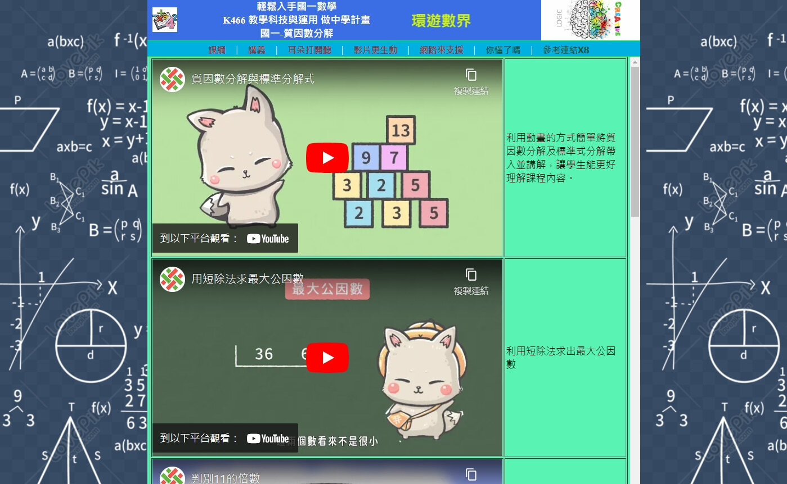
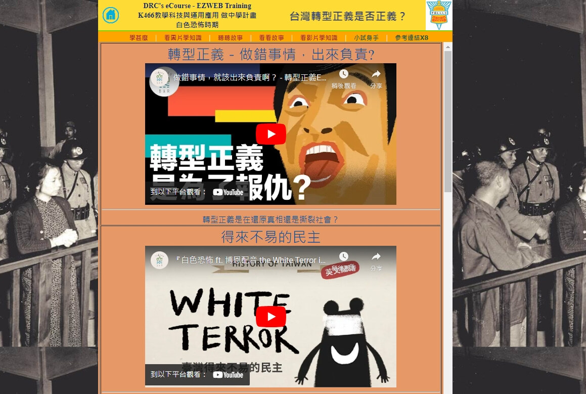
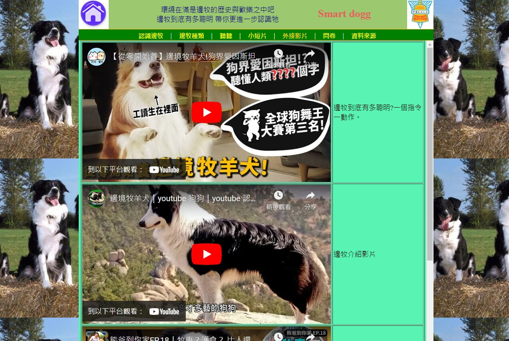

5.html, 用 記事本/notepad，以原始碼編輯
#5 page 外來媒體 (線上 or YT下載)
需內容對題，以影音檔展現概念，用文字敘事並說明出處，4X2
Your browser does not support the video tag.
編碼解析: video width="400" height="300" controls autoplay + source src="video/elt5.mp4" type="video/mp4"


